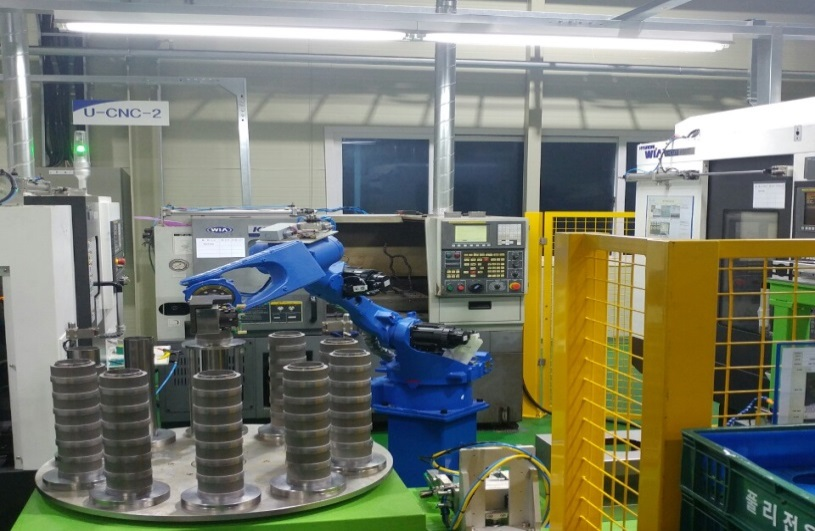
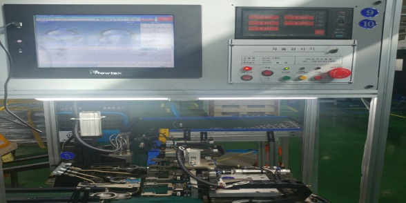
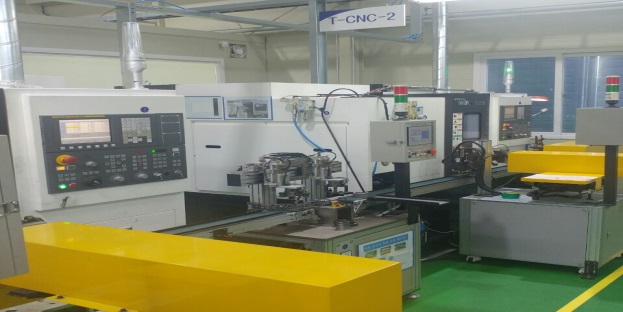
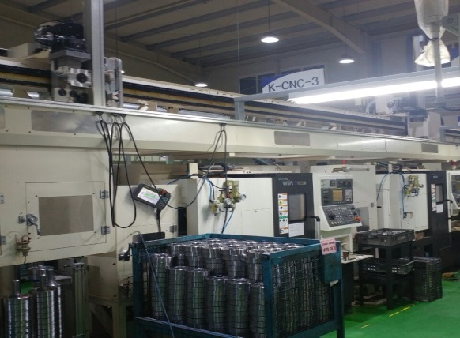
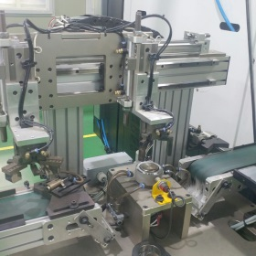
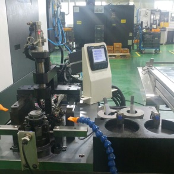

다축형 로봇 TYPE CNC
YASKAWA 기반 U-라인(테슬라)으로 로봇 1대가 CNC 3대와 연계되며 자동 치수검사를 수행합니다.
신규설비 자동화를 지속 적용하며, 자동 치수검사·자동 치수보정 기능을 통해 생산성과 품질 안정성을 강화하고 있습니다.

YASKAWA 기반 U-라인(테슬라)으로 로봇 1대가 CNC 3대와 연계되며 자동 치수검사를 수행합니다.

현대 위아 T-라인으로 자동 치수보정(Q-SETTER)과 자동 치수검사를 적용합니다.

K-라인은 효율적인 공간활용과 제품 자동 전환에 유리한 구조를 갖추고 있습니다.


